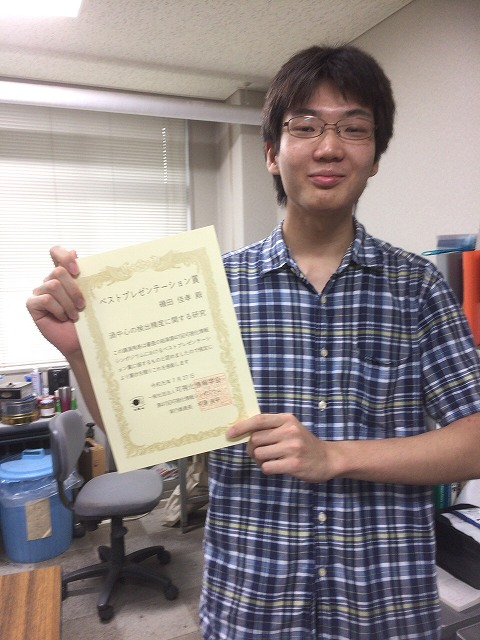
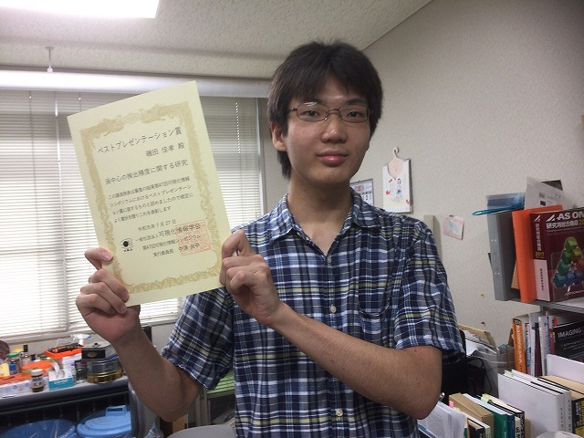
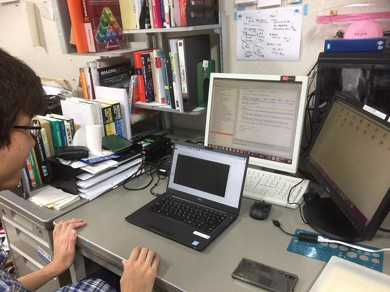

| ・ 磯田さん，可視化情報学会 ベストプレゼンテーション賞の受賞 (R01.08.28) | |||
先日の可視化情報シンポジウム 2019で受賞しました．3月よりさらなる磨きをかけたプレゼンでした． 特に質疑応答は格段の進歩があって，みんなが感心しました．自分が納得するまで考えるので，毎日少しなのですが積み重ねがすごいことになる研究スタイルです．どんどん加速も着いてきたように感じるこの頃． |
|||
|

人生初なのです！ |
画像検索 | ||
|

令和っぽく |

新しいノートPCで研究しています | ||